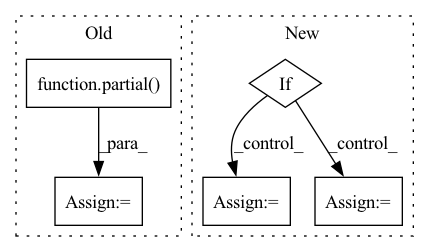

Pattern ID :9845
Before Change
// astred and cross
print("ADDING CROSS AND ASTRED")
partial_func = partial( process_astred_cross, method)
// dirty looking way of fast processing
// as taken from https://stackoverflow.com/a/60056244/1150683
row_list = df.progress_apply(partial_func, axis=1)After Change
gpu_partial_process = partial(process_astred_cross, use_gpu=not args.no_cuda)
if args.j > 1:
splits = np.array_split(df, args.splits)
partial_func = partial(mapable_df_process, gpu_partial_process)
with Pool(processes=cargs.j) as pool:
row_list = pd.concat(tqdm(pool.imap(partial_func, splits),
total=args.splits,In pattern: SUPERPATTERN
Frequency: 3
Non-data size: 5
Instances Fragment ID: 35298238
Project Name: bramvanroy/astred
Commit Name: 8893b5c8514d739d55727a28ec1c1cb2ddcf033a
Time: 2020-03-02
Author: Bram.Vanroy@UGent.be
File Name: add_info_to_df.py
M Class Name: AnonimousClass
N Class Name: AnonimousClass
M Method Name: main(1)
N Method Name: main(3)
M Parent Class:
N Parent Class:
M File Name: add_info_to_df.py
N File Name: add_info_to_df.py
M Start Line: 51
M End Line: 75
N Start Line: 71
N End Line: 95
Before Change
assert not (nearest_neighbor_upsample and bilinear_upsample)
if bilinear_upsample:
upsample_klass = partial( InterpolateUpsample, mode = "bilinear")
elif nearest_neighbor_upsample:
upsample_klass = partial(InterpolateUpsample, mode = "nearest")
else:
upsample_klass = UpsampleAfter Change
pre_downsample = None
if memory_efficient:
pre_downsample = downsample_klass(dim_in, dim_out)
current_dim = dim_out
skip_connect_dims.append(current_dim)
Fragment ID: 35298237
Project Name: lucidrains/imagen-pytorch
Commit Name: 36bdefca0e8670ca42b39236315121b703b9533f
Time: 2022-06-27
Author: lucidrains@gmail.com
File Name: imagen_pytorch/imagen_pytorch.py
M Class Name: Unet
N Class Name: Unet
M Method Name: __init__(1)
N Method Name: __init__(1)
M Parent Class: nn.Module
N Parent Class: nn.Module
M File Name: imagen_pytorch/imagen_pytorch.py
N File Name: imagen_pytorch/imagen_pytorch.py
M Start Line: 1178
M End Line: 1250
N Start Line: 1148
N End Line: 1221
Before Change
_ob = "\rcompleted: {}, elapsed: {}s, {:.1f} tasks/s"
def __init__(self, num_tasks=None):
self._write = partial( print, end="")
self._task_num = num_tasks
self._completed = 0
self._timer = Timer()
After Change
except ImportError:
self._active = True
if self._active:
if self._task_num is not None:
msg = self._wb.format(0, self._task_num, 0, 0, 0, "")
msg = msg.format(" " * self._get_bar_width(msg))
else:
msg = self._ob.format(0, 0, 0)
print(msg, end="")
self._last_length = len(msg)
self._timer = Timer()
Fragment ID: 35298242
Project Name: yeliudev/nncore
Commit Name: f87d4ce2ab7749a1f651404ed88b444fdccd698f
Time: 2021-04-18
Author: yeliudev@outlook.com
File Name: nncore/utils/progress.py
M Class Name: ProgressBar
N Class Name: ProgressBar
M Method Name: __init__(2)
N Method Name: __init__(2)
M Parent Class: object
N Parent Class: object
M File Name: nncore/utils/progress.py
N File Name: nncore/utils/progress.py
M Start Line: 20
M End Line: 39
N Start Line: 24
N End Line: 40